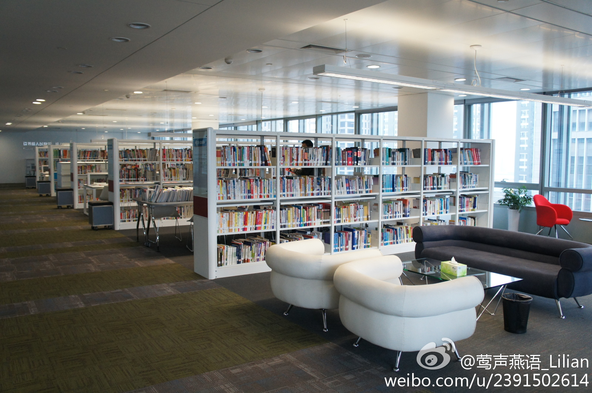

MySQL现在也是O记的，说"去Oracle"应该加个产品后缀。//@hellodba: 淘宝为什么要去oracle，因为它很难适应互联网大规模应用对扩展性的要求，与其说是去I/O/E，更不如说是分布式架构战胜了集中式架构，开源系统战胜了商业系统。至于原来的Oracle DBA，现在都已经是老大了，剩下的DBA都已经转型。@红袖添香夜杀猪:阿里系去Oracle化去Yahoo化阻力如何，很想听听这背后的故事，通过什么样的努力促使开源技术在阿里系的广泛使用，尤其是mysql、lvs这些很适合互联网公司使用的产品,有空编写本中国版的《浪潮之颠》吧。。期待。。@放翁_文初 @曹益峰
很多办公环境好的公司，都乍这么低调呢？更见证了国内公司是如何地蒸蒸日上，而曾经的外企优势缩水得多么利害。@莺声燕语_Lilian:终于做完和赛迪信息的联合发布会，过去几天晨昏颠倒，不过活动顺利圆满，大家心情都很不错！活动结束，参观赛迪大厦，惊艳异常！先不说它这个荣获2009十大绿色建筑的采光、诺大的健身中心、恒温的游泳池、放电影的大会议室、来自巴西的咖啡豆，就说这员工的图书馆，当时我一看，眼泪快下来了。。。 
//@郭继军_Lancelot:贝尔实验室为啥这么牛？由于AT&T的垄断地位，美国政府和贝尔实验室的结算采用“成本加成定价法”，就是说，成本越高，AT&T获利越多。贝尔实验室成本主要是人才，所以AT&T当年的策略是用最高待遇吸引最优秀的科学家，结果当然辉煌。后来贝尔实验室由AT&T自己出资，十年就没落了。---:该账号行为异常，存在安全风险，用户验证之前暂时不能查看。查看帮助 网页链接
 //@hellodba: 淘宝为什么要去oracle，因为它很难适应互联网大规模应用对扩展性的要求，与其说是去I/O/E，更不如说是分布式架构战胜了集中式架构，开源系统战胜了商业系统。至于原来的Oracle DBA，现在都已经是老大了，剩下的DBA都已经转型。
//@hellodba: 淘宝为什么要去oracle，因为它很难适应互联网大规模应用对扩展性的要求，与其说是去I/O/E，更不如说是分布式架构战胜了集中式架构，开源系统战胜了商业系统。至于原来的Oracle DBA，现在都已经是老大了，剩下的DBA都已经转型。